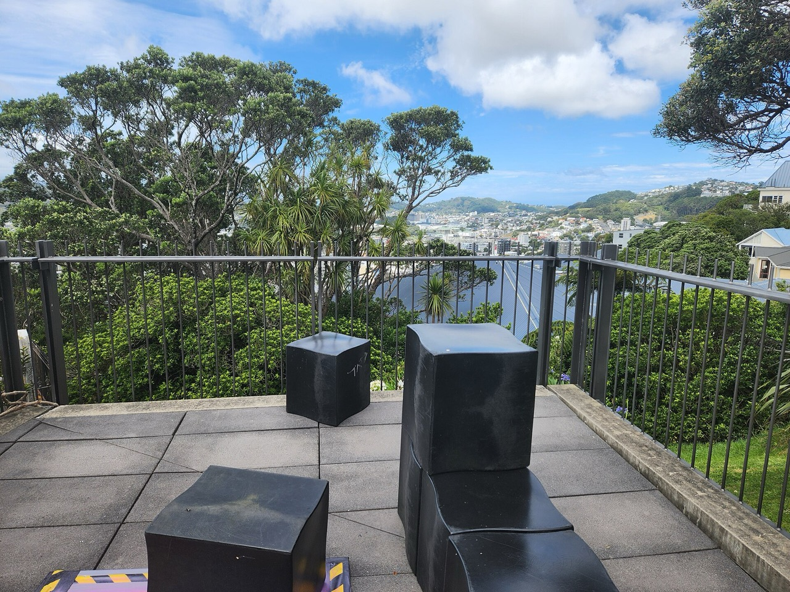
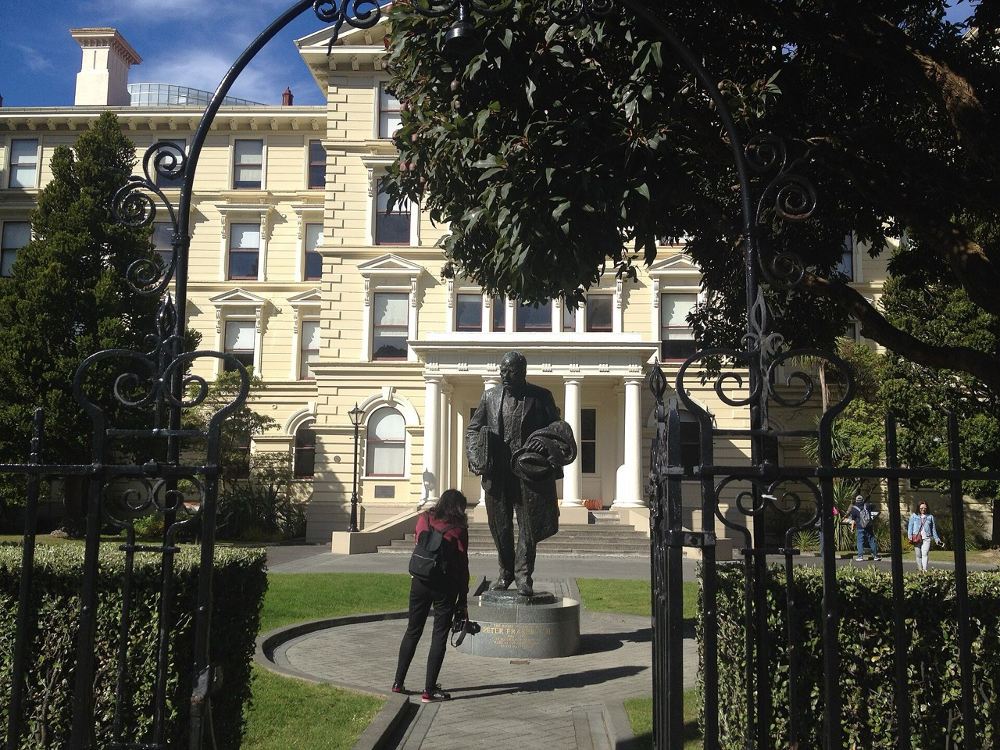
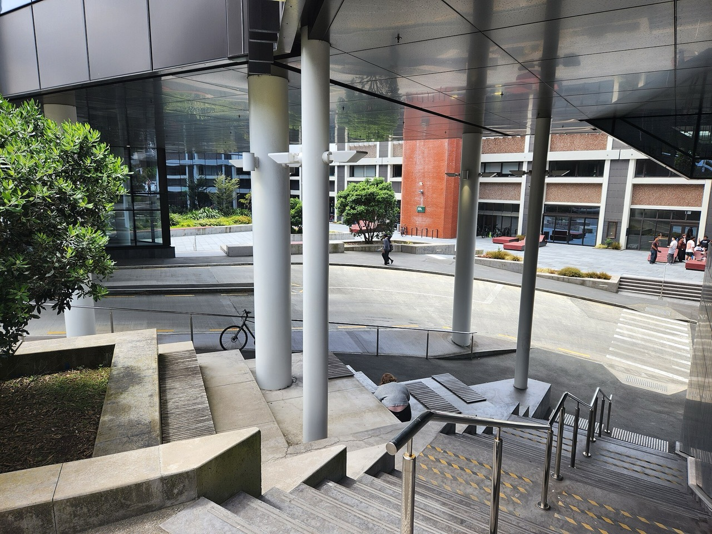
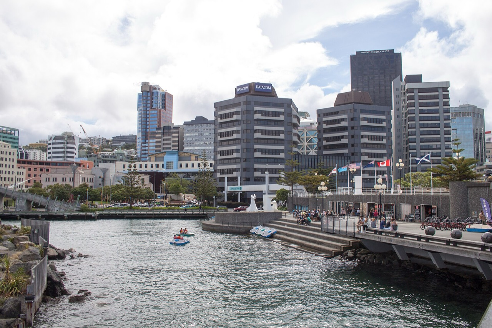

Kelburn
The main campus and heart of first-year life, reached by the famous cable car — plus the Te Herenga Waka marae.
The university is woven through the capital — lectures in the morning, the waterfront at lunch, Parliament at an afternoon guest lecture.

The main campus and heart of first-year life, reached by the famous cable car — plus the Te Herenga Waka marae.

Law and Business & Government, minutes from Parliament, the courts, and the CBD.

Architecture and Design Innovation, in the middle of Wellington's creative district.
Three trimesters instead of two long semesters — more start dates, more flexibility.
| Trimester | Timing | What it's for |
|---|---|---|
| Trimester 1 | Late February | The main intake — nearly all programmes start here |
| Trimester 2 | July | Second intake — 60+ programmes welcome new students |
| Trimester 3 | Summer | Fast-track, explore new interests, or lighten the load |

Te Papa museum, the waterfront, Cuba Street's cafés, and the home of Weta Workshop.
Bush trails behind Kelburn, beaches twenty minutes away, the South Island a three-hour ferry ride.
Everything walkable, halls of residence for first years, and a dedicated international team.
Student life on wgtn.ac.nz ↗ · Wellington tourism ↗ · Te Papa museum ↗
Most first-years live in a catered hall of residence; after that, flatting in Wellington is the norm. Indicative figures for an international student.
| Option | Indicative cost | Good for |
|---|---|---|
| Hall of residence (catered) | – per year | First years — meals, community, support included |
| Self-catered hall / flat | – per week (room) | Independence from the second year on |
| Total living costs | – per year | Food, transport, phone, entertainment |
Amounts follow the € / NZ$ switch in the header (euros at an indicative 1 NZ$ = €0.50). Official guidance: wgtn.ac.nz/accommodation.